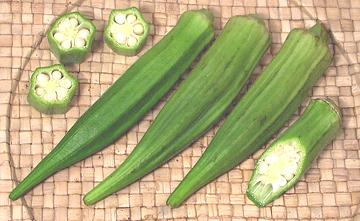
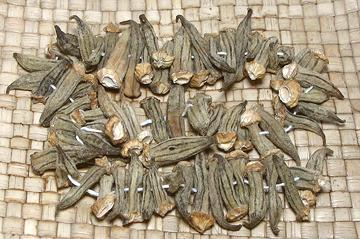
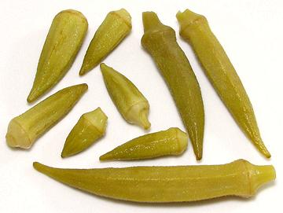

Okra

[Bamia (Swahili); Ladies' Fingers, Okro; Okuru (Igbo); Ngombo, Kingombo
(Bantu); Quingombo (Portuguese); Gumbo (US (parts), Caribbean); Endakkai,
Bhindi (India); Bamya (Arab); Abelmoschus esculentus sym.
Hibiscus esculentus]
The origin of Okra is uncertain, but possibly from Ethiopia or India.
The seeds of this mallow were carried to the U.S. with the slave trade.
Okra is now grown world wide and is particularly important in the U.S.
South, Africa, the Middle East and India.
In African, Middle Eastern and Southern US cooking okra is valued for
it's mucilaginousness (sliminess) which adds body to broths and sauces,
but in much of the world, India, for example, cooking methods are
designed specifically to suppress this characteristic.
Okra Leaves are used in African cooking, but what is sold as
"Okra Leaves" in Southern California is a different mallow,
Molokhia.
For those who fondly remember eating the seed wheels of
Common Mallow as children, the taste
can be recaptured in more convenient form by eating Okra pods raw.
More on Mallows.
Buying:
Select okra for crisp, bright green medium size
pods, as close to the same size as possible. If they will be cooked
whole, the smaller and younger the better.
Storing:
Okra can be kept in the refrigerator, wrapped
loosely, for up to a week, but first leave it out on the counter long
enough so there is no free water on it or it will decay.
Cooking - Whole Pods:
For non-slimy whole okra pods
cooked in a recipe, shave the cap and stem off in a conical shape with a
very sharp knife. Make sure you do not cut so deep as to make an opening
into the interior. Soak the pods in vinegar in a non-reactive bowl for
about 30 minutes, tumbling often to make sure they stay wet with
vinegar. This treatment will prevent them from splitting open during
cooking. Rinse, drain and pat dry before using.
Dried Okra

This form is popular in Turkey and Armenia for special soups
and stews. Tiny okra pods were traditionally gathered in the summer,
threaded on a string and hung up to dry for use in the winter. The photo
specimens, up to 1-1/8 inches long, were purchased from a multi-ethnic
market in Los Angeles, but they weren't cheap at 2012 US $12.78 / pound
- but they were very light, so you get a lot of them in a half pound
package. I have seen photos of strings of dried okra pods quite a bit
smaller than these.
Pickled Okra

This form is popular in Turkey and Armenia as part of appetizer
plates. From the evidence of multiple brands in the markets where I shop
it appears the Turks prefer very short okras, naturally pickled,
containing only okra and salt. Thse are very tender, with very good
okra flavor and very low acidity, packed in moderately mucilaginous
liquid (which you can rinse off if you wish). The photo specimens
(to the left in photo) were from 1 inch to 2-1/4 inches long.
In contrast, the Armenians appear to prefer longer, more mature
okra, and may include some acetic acid in the mix, and some herbs.
This product was a bit more tart, had a little crunchiness, and had
noticeable, but not at all objectional, fiber in the pods. The pods
(right and bottom in the photo) ranged up to 4-1/4 inches and 0.57 inch
wide.
These specimens were both purchased from a multi-ethnic market in
Los Angeles (Sunland) for 2013 US $2.69 / 1-1/2 pound jar (Turkish).
I have a slight preferance for the Armenian, but both were enjoyable.
Pickled Okra is also very popular in the American Southeast, often
made at home but also available in jars. These are larger okra than
used in Anatolia and Caucasus and they are pickled in vinegar, with
spices, rather than naturally with salt. The objective here is for them
to be crunchier rather than soft, and with a spicy flavor. Chilis are
often included in the mix.
mw_okraz 081003 r 130804 - www.clovegarden.com
©Andrew Grygus - agryg@clovegarden.com - Photos
on this page not otherwise credited © cg1
- Linking to and non-commercial use of this page permitted